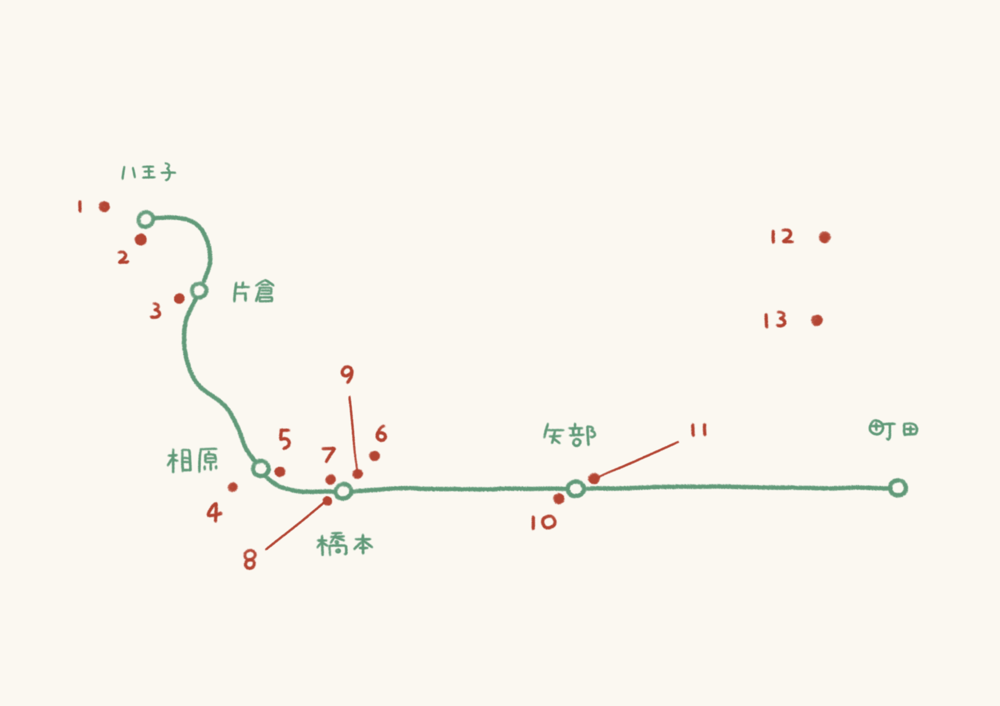

JP横浜線に乗って巡るカフェマップ
東京の端っこにも素敵なお店はたくさんあります
そんな素敵なお店を駅ごとに紹介します
緑は横浜線 赤はお店の位置です
八王子駅から町田駅まで6駅と13店舗の紹介です

1 . Cafe rin
2 . coffee ritmos
3 . 月待チ珈琲店
4 . 木のカフェ
5 . 奇妙な植物園
6 . うたたね舎
7 . SUMI BAKE SHOP
8 . ノイロ.2nd dining
9 . finn coffee
10 . アトリエノcafe&bar
11 . ソラ珈琲&食堂ヒュッテ
12 . beans farm
13 . 403 not found
© 2022 2093208.